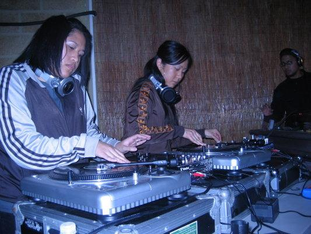

Skratchpad, an open turntable and DJ-centered Hip Hop event, was established in San Francisco in May 2003 . It was created
by Celskiii and Deeandroid, with the help of DJ Amerriica, Jus Jones, and Winst-Oner, as an ode to SF’s late DJ weekly
hosted by Derrick D., Beat Lounge. Local DJs as well as DJs from around the world would attend Skratchpad to showcase
their skills and jam with DJs during the question & answer portion of the night.

From an open turntable format event to one which includes a Hip Hop show with DJ battles and performances by Bboys & Bgirls,
emcees, bands, producers, and drummers, Skratchpad’s supporters grew from a small intimate crowd in 2003 to a population
that extends from the Bay Area all the way to Houston, Texas. Since 2003, Skratchpad has expanded into multiple cities
including: Sacramento, Los Angeles, San Jose, Las Vegas, Portland, and Houston.
Skratchpad continues to organize events by a community of DJs in each city, creating these spaces for DJs out of a love for
the art form. Most cities continue to host the Skratchpad night as a “No cover, just culture,” event, being free to the
public.
Skratchpad has become a successful event due to the hard work of every DJ and artist who has contributed and continues to
put in work to organize such a unique Hip Hop event. Each Skratchpad chapter is organized by a group of core members
and resident DJs on a grassroots level. Many people leave a Skratchpad event, feeling inspired and having a sense of
community.